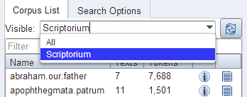

Multiple Instances of the Interface
Creating instances
When multiple corpora from different sources are hosted on one server it is often still desired to group the corpora by their origin and present them differently. You should not be forced to have an ANNIS frontend and service installation for each of this groups. Instead the administrator can define so called instances.
An instance is defined by a JSON file inside the instances sub-folder in one of
the configuration locations, e.g. the home folder of the user running the ANNIS service
(under Windows, in C:\Users\username\.annis , or under Mac OSX under /Users/username/.annis/,
which is a hidden folder; to view hidden folders you may need to reconfigure your
Finder application).
Instances can then be specified under this folder.
The name of the file also defines the instance name.
Thus the file instances/falko.json defines the instance named "falko".
{
"display-name": "Falko",
"default-querybuilder": "tigersearch",
"default-corpusset": "falko-essays",
"corpus-sets": [
{
"name": "falko-essays",
"corpus": [
"falko-essay-l1",
"falko-essay-l2"
]
},
{
"name": "falko-summaries",
"corpus": [
"falko-summary-l1",
"falko-summary-l2"
]
}
],
"keyboard-layout" : "de",
"login-on-start": "true",
"help-url": "https://example.com/annis-help"
}
Each instance configuration can have a verbose display-name which is
displayed in the title of the browser window. default-querybuilder defines the
short name of the query builder you want to use. Currently only "tigersearch" and "flatquerybuilder" are
available in the default installation.
The keyboard-layout variable is used as the default value for the virtual keyboard of the AQL query box.
If login-on-start is set to true a login window is shown at each startup of the ANNIS search UI if the user is not logged in yet.
help-url allows to set your own help page which is displayed in the "Help" tab.
This URL must point to the same domain as the ANNIS user interface is located on, because of the same-origin policies of the browsers.
While any user can group corpora into corpus sets for their own, you can define corpus sets for the whole instance. Each corpus set is an JSON-object with a name and a list of corpora that belong to the corpus set.
Any defined instance is assigned a special URL at which it can be accessed:
http://<server>/annis-gui/<instance-name>. The default instance is
additionally accessible by not specifying any instance name in the URL. You can
configure your web server (e.g. Apache) to rewrite the URLs if you need a more
project specific and less "technical" URL (e.g. http://<server>/falko).
Embedding Web Fonts
It is also possible to set an embedded font for query result display in your instance,
using the same JSON instance file file described in the previous section.
Thus a web font is applied to a specific instance.
If you not want to define an extra instance, it is possible to add the font configuration to the
default.json file in the instance directory. If no instance
directory or default.json file exists, create it.
Add a property font to the config with the following parameters:
{
...
"font" :
{
"name" : "foo",
"url": "https://example.com/foo.css",
"size": "12pt" // optional
}
}
You must also provide a css file, which contains the @font-face rule
und is reachable under the defined link in the instance config:
@font-face {
font-family: 'bar';
font-style: normal;
font-weight: normal;
font-size: larger;
src:
local('bar'),
url(bar.woff) format('woff');
}
Further explantation about the @font-face rule is available on the MDN web docs
.
If you need to have a different font configuration for the frequency chart
just add a frequency-font entry. It has the same structure as font.
Using Corpus Groups
It is possible to group corpora into groups, which are selected above the corpus list in the search form:

While any user can group corpora into corpus sets for their own use, you can define corpus sets for the whole instance using the "corpus-sets" in the JSON file described above. Each corpus set is itself a JSON-object with a name and a list of corpora that belong to the corpus set.